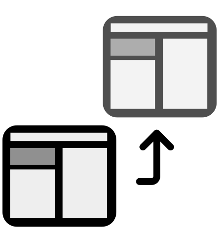
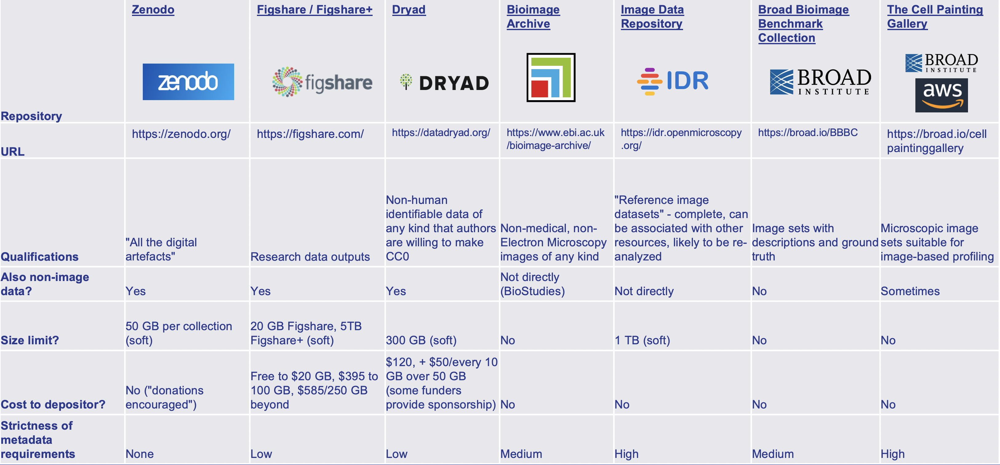
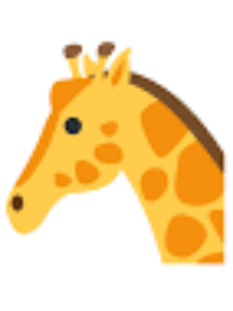

Machine learning workflows#
Minimal

Cite original method
{kind=link}
It is vital that the original deep learning method can be clearly identified. Thus, it is critical that the original methods paper is cited that describes the used machine learning approach.
Examples
References
Access to model
{kind=link}
The model used for ML-based processing needs to be publicly accessible. The aim is to allow others to test and examine the workflow. Thus, making the model accessible on request is a minimum requirement.
Example or validation data
{kind=link}
Each machine learning workflow must be accompanied by example image data that is openly accessible, appropriate and sufficient for testing the workflow performance.
{kind=link}

Fig. 7 Overview provided by Cimini 2023.#
Examples
References
Recommended (Pre-trained & novel models)
Train, test & metadata
{kind=link}
To enable the reproduction and validation of the results, whether from model trained from scratch or fine-tuned, the full training and testing data should be made available, alongside all necessary metadata (e.g. hyperparameters, configuration, training time given computing resources).
Code available
{kind=link}
The code used for training the model should be provided via public repositories with long-term record (e.g. Zenodo), while also referencing the public datasets.
Fig. 8 Overview provided by Cimini 2023.#
Limitations
{kind=link}
The authors should discuss and ideally test how well the model has performed and show, or at least discuss any, limitations of the used machine learning approach on their data.
Cloud hosted or container
{kind=link}
The uptake and integration of code, models, and training data is vastly improved by tools that minimize the effort required for access. Containers enable code to be run locally on a variety of operating systems without modification. Alternatively, with appropriate compute infrastructure, cloud-hosted interfaces can democratize access to powerful runtime environments.
Ideal (novel models)

Standardized format
{kind=link}
Utilization of community standards and formats is further increasing the ease of reproduction. This is also true for machine learning. New machine learning models could therefore be be created complying with standardized formats.